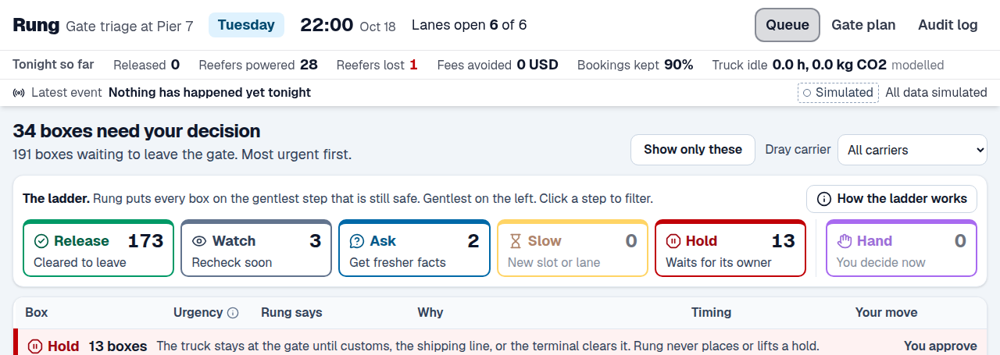
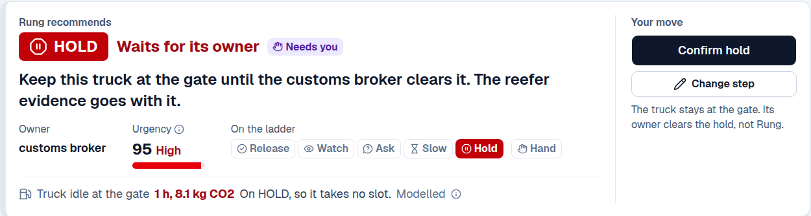
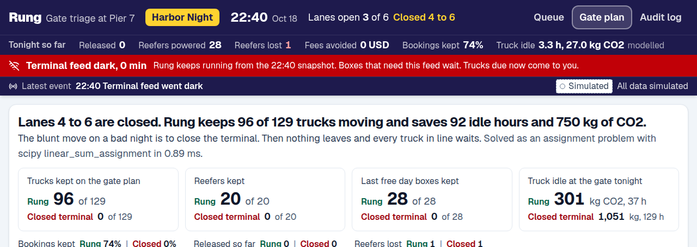
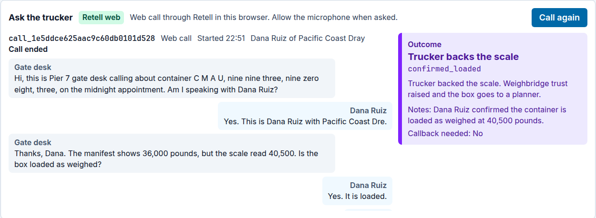

An ordinary Tuesday

- A dispatcher's pull list: 34 of 191 boxes need a decision.
- The voice agent calls truckers about weight mismatches.
Gate triage for container terminals
Keep the gate open when the data goes bad.
Every truck leaving a container terminal goes through the gate. Five systems describe each box, and they disagree all the time.
On a bad night the safe move is to close the gate, and every truck in line pays for it.
Read for every box, each field badged live or simulated.
Trust fades as a reading ages and drops 30 percent for each conflict.
15 small rules vote. The gentlest safe step wins.

Every hold and hard release waits for one tap, and lands in the audit log with its reason.


Lanes 4 to 6 down, feed dark. Rung against closing the terminal.
Manifest 36,000 lb, scale 40,500 lb. Rung asks.
The model runs the call. Rung's rules decide what happens next.

Global by design. The decision core never changes: one ladder, one trust model, one gate optimizer, and a person approves every hold. A region profile swaps the edges:
| Los Angeles | Rotterdam | Shanghai | |
|---|---|---|---|
| Data | Terminal49 | Portbase | China Single Window |
| Units | lb, USD | kg, EUR | kg, CNY |
| Customs | CBP | Douane | China Customs |
Lagos, where trucks queue for days, needs it most.
One tool for ordinary Tuesdays and Harbor Nights.